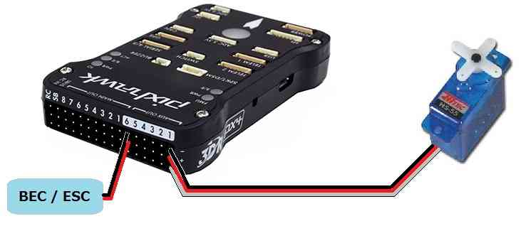

Servo¶
Copter, Plane and Rover can control servos for any purpose, including: triggering a camera shutter, releasing a parachute or dropping a tennis ball. These servo(s) can be controlled either directly by the pilot via a switch on the transmitter, through commands sent from the ground station or as part of a mission.
Either analog or digital servos may be used.
Connecting the servo to an AutoPilot¶
{kind=link}
If using Copter Connect the servo to AUX OUT 1, 2, 3 or 4. MAIN OUT 1 ~ 8 should be avoided because these update at 400hz.
If using Plane or Rover where all PWM outputs update at SERVO_RATE, which defaults to 50hz, any unused MAIN OUT or AUX OUT 1 ~ 4 may be used.
AUX OUT 5 and 6 cannot be used by default because they are setup as Relays. These pins can changed to Servo outputs by setting the
BRD_PWM_COUNTparameter to 6 and setting RELAY_PIN and RELAY_PIN2 to -1.The Pixhawk autopilot cannot provide power to the servos so an external BEC or ESC that can provide 5V should be used.
Note
in firmware versions 4.2 and later, the method for setting a PWM/SERVO/MOTOR output to be a GPIO function is changed. Instead of BRD_PWM_COUNT being used, the individual SERVOx_FUNCTION parameter is merely set to “-1”. If set to “0”, it remains a PWM output, unassigned to a function, and outputs that output’s trim value when board safety is not active. If the servo function is being “mirrored” to a remote device, as in the case of a DroneCAN or KDECAN ESC, then in order to change the autopilot board’s corresponding output pin to be a GPIO, but allow the SERVOx_FUNCTION to still be assigned to the remote device, the SERVO_GPIO_MASK parameter can be used to assign the board pin to be a GPIO without affecting the SERVOx_FUNCTION assignment for the remote device.
Note
when using digital servos they can provide faster and more precise control if a higher update rate for the PWM outputs is used by setting the SERVO_RATE to a higher value such as 100Hz, 333Hz or even 400Hz, depending on the capabilities of the servos being used. This value affects all PWM outputs, other than motor control outputs, so only do this if all of the servos on the vehicle are digital servos that support this higher rate.
Controlling the servo as a camera shutter¶
Details on how to set-up and control the servo as if it were triggering the shutter of a camera can be found here on the Camera Gimbal wiki page. The advantage of this set-up is:
the servo can be triggered from the ch7 or ch8 auxiliary switch on Copter
if you wish the servo to move to one position, delay for a moment then return to its original position this can all be accomplished with a single mission command
the location and attitude of the copter will be recorded to the dataflash each time the servo is triggered
The disadvantage of using the camera shutter method is the servo can only be moved to two pre-configured positions.
Video example of a tennis ball dropped used at Sparkfun’s AVC 2012.
Controlling the servo as a servo¶
The traditional way to control a servo only works as part of a mission (i.e. AUTO mode). Follow these instructions:
Connect to your autopilot from the ground station
On the Config/Tuning > Full Parameter List page, ensure that the SERVOx_FUNCTION (or RCx_FUNCTION) is set to zero for the servo (i.e. SERVO9_FUNCTION = 0 if the servo is connected a Pixhawks AUX OUT2).
Press the Write Params button
Create the mission you wish to fly and add a DO_SET_SERVO command and include the servo number (i.e. “10”) in the “Ser No” field and the PWM value (usually between 1000 ~ 2000) in the “PWM” field.
{kind=link}
{kind=link}
Note that the DO_SET_SERVO command is a “do command” meaning that it can only be run between waypoints so it must not be the first or last command in the mission. It will be executed immediately after the waypoint that precedes it.
Testing with the Mission Planner¶
The mission planner’s Flight Data screen includes a “Servo” tab on the bottom right that can be used to test that the servos are moving correctly.